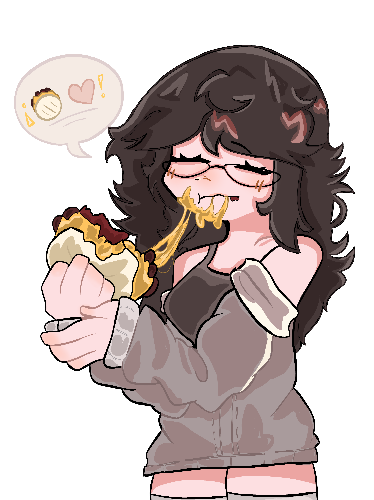

Proyectos
Aquí encontrarás información sobre mis proyectos más destacados y mi proceso creativo.

Aquí encontrarás una selección de mis proyectos, junto con las habilidades y técnicas que aplico en cada creación.
Cada obra refleja mi dedicación al detalle y la evolución constante de mi estilo artístico. ¡Espero que disfrutes explorándolo tanto como yo disfruto crearlo!
Aquí encontrarás información sobre mis proyectos más destacados y mi proceso creativo.
Una selección de mis obras favoritas, en las que he aplicado diversas técnicas y estilos artísticos. Cada pieza representa un momento especial en mi evolución como artista.
Me enfoco en capturar la esencia de mis personajes a través de expresiones únicas y composiciones dinámicas, experimentando constantemente con diferentes paletas de colores y técnicas mixtas.


Para dar vida a mis ilustraciones, utilizo herramientas digitales como Ibis Paint X, combinadas con mi pasión por el arte tradicional. Mi proceso creativo inicia con bocetos llenos de expresividad, que luego perfecciono digitalmente, explorando colores, trazos y detalles.
La versatilidad de mis métodos me permite innovar y evolucionar constantemente en mi estilo, fusionando lo mejor del arte manual y digital.